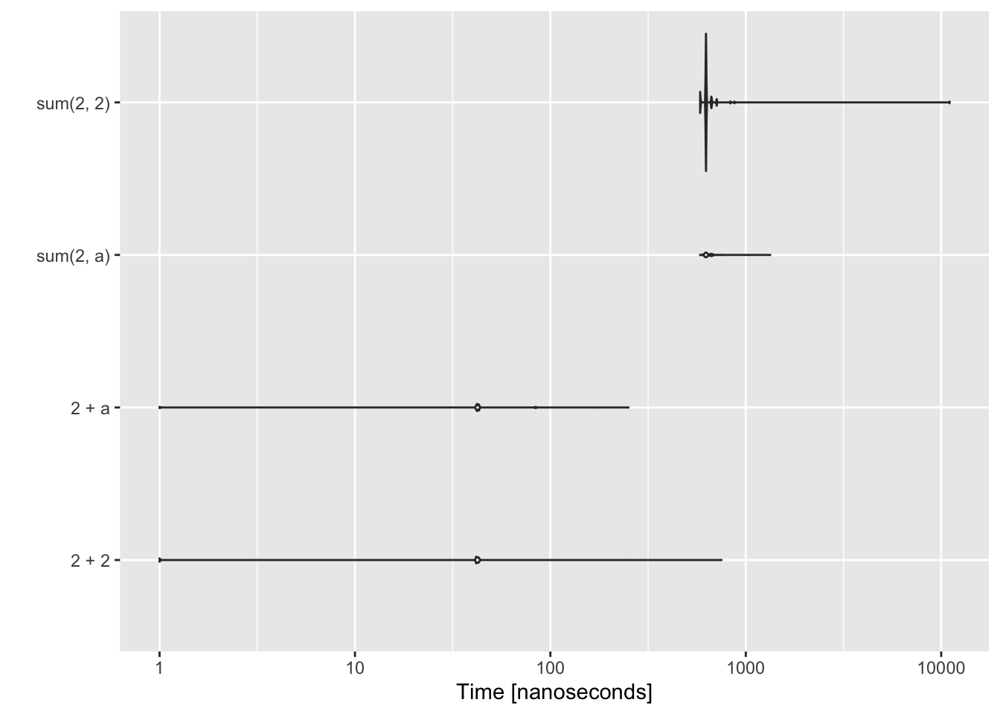
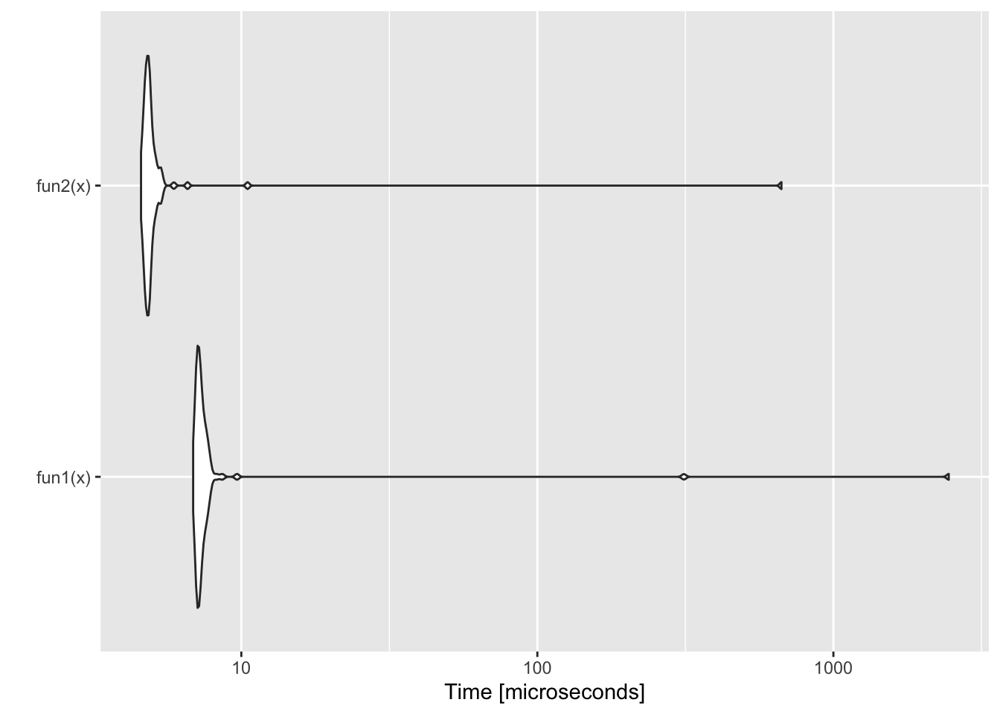

Week 8: More R package tips
| Compartmentalized | Documented | Extendible | Reproducible | Robust |
This week I will discuss topics that are specific for R package developers. These are topics that can tough to figure out when you are starting:
- How to set up a NAMESPACE
- Passing
R CMD check - Coding GitHub Actions workflows
- Some debugging and code speed analysis tips
- Intro to C++ code in your package
A good resource is Hadley Wickham’s book R Packages.
Depends and Imports
Read about all the details of NAMESPACE in the R package book section on NAMESPACEs. But that has a lot of complex cases. I suggest trying to keep things as simple as you can.
Package: MyNewPackage
Type: Package
Title: What the Package Does (Title Case)
Version: 0.1.0
Author: Who wrote it
Maintainer: The package maintainer <yourself@somewhere.net>
Description: More about what it does (maybe more than one line)
Use four spaces when indenting paragraphs within the Description.
Depends: R (>= 4.0.0), ggplot2
Imports: forecast
Suggests: knitr
License: What license is it under? (GPL-3 or CCO for US Government)
Encoding: UTF-8
LazyData: trueNote see the pkgdown-template for how to set up your license for a NOAA package.
@Depends
These packages that will be loaded when your package is loaded. So if you have ggplot2 in @Depends, like above, then the user automatically can use ggplot2 functions without issuing the command library(ggplot2). Note for public packages, it is polite to alter the user’s workspace as little as possible so only put a package in Depends if you really need to or if it wouldn’t make sense to load your package and not have another package available.
If you have a package on @Depends then you must import that package in your NAMESPACE. Let’s say ggplot2 (and only that) is on your @Depends line.
- If you are using roxygen2, then make a file called (say),
import_packages.Rin the R folder and add this code to it. TheNULLis important.
#' @import ggplot2
NULL- If you are manually setting up your NAMESPACE, then add this code to it:
import(ggplot2)In your package functions, you should use :: to access the functions from the packages on the @Depends line. Strictly speaking, you don’t have to, but I suggest you do. Otherwise a) if you ever move that package from @Depends to @Imports, you have much suffering in front of you as you search for all the functions and change to use ::. b) Other people (or yourself) will know where every function comes from. c) Should you ever, perhaps inadvertently, create a function with the same name as one of the @Depends functions, you won’t run into a conflict.
@Imports
Imports are required for the package functions, but the user will not have access to the functions without calling library(...). In your package, you must use :: to access the functions from the packages on the @Imports line. Most of your package dependencies will be here.
To limit the number of headaches that users face when trying to install your package, use as few packages on your @Depends and @Imports lines in DESCRIPTION file as possible. If your package does not need the package to work, then put the package on @Suggests.
Many packages are loaded by base R but you still need to declare those in @Depends or @Imports. For example lm() is in the stats package. Tip Routinely use ?function to figure out what package a function comes from and then add xyz:: to that function if you are writing a function for a package. Or add the package to @Depends and to your NAMESPACE.
@Suggests
These packages are used in vignettes or examples. You (the developer) will need these installed when you check your package.
Do your need R on @Depends
No not unless you have a version dependency. There were some big changes in R 4.0 so you might need that dependency. If you are doing a public R package, search about for options for testing your package under different R versions.
What should you put on your Depends and Imports lines?
First off, when you are starting, don’t worry too much about this. Just add packages that are needed as you work on your functions.
ALWAYS use
::to use functions from other packages in your package functions. Seriously. You will save yourself so many headaches down the road by being able to search forxyzpackage::to find all that packages functions. Why? Trust me, one day you will want to swap out packages or remove dependencies. Note, this can be a hassle with functions likeggplot()which use functions within their calls and you have to use::everywhere. Like soggplot2::ggplot(df) + ggplot2::geom_point(ggplot2::aes(gp, y))Arg. Another example is say a GAM call:
mgcv::gam(a ~ mgcv::s(b), data=df)But this is just for your package functions. In your scripts, you’d probably use a
library()call.Never ever use
library()(orrequire()) in a function! Usexyzfunction::function. Sure uselibrary()in your scripts, but never in a package function. When you add a function from a new package to your function, add those packages to@Dependsor@Importsin your DESCRIPTION file as you go along.Every so often check that you don’t have packages on
@Dependsand@Importsthat you don’t use. Just do a Edit > Find in Files… search forxyzpackage::to find out if you are still usingxyzpackage.How do you know if you forgot a dependency or forgot a
::somewhere? A few ways:- From the Build tab, use More > Check Package. That should show package dependency errors (plus a whole slew of other problems for you to work through).
- Do Session > Restart R to close all your loaded packages. Then load your package with
library(yourpackagename)and try your functions. Things will fail if you have a package in@Importsbut forgot a::somewhere.
My strategy
I have R packages that are mainly for my personal use. I use the package to make sure I have access to the various packages that I’ll be using. So for example, if I am doing work on my sardine papers, I have set of packages that I use. When I issue the command library(SardineForecast) a bunch of packages are loaded. This makes it handy for me, but all those dependencies makes it a huge hassle to install the package from GitHub for my collaborators (and even a hassle for me to install from GitHub). Huge Hassle. Invariably one of the 15 packages that I need will itself have a dependency that won’t load and then I have to debug that. If I need collaborators, who are on different operating systems and various versions of R to install it, it’s a suffer-fest.
For my MARSS package, I have only 3 non-base dependencies in the @Imports line and nothing on the @Depends line besides R. Then on the @Suggests line, I have a bunch of packages that are used in the vignettes. MARSS is easy to install from GitHub (though it is also hosted on CRAN).
Passing package Check
The is also called R CMD check but if you are using RStudio, you can use Build tab > More… > Check
R CMD check has many errors that can be hard to decipher. I am going to go through the common hard-to-decipher ones.
ggplot2 and dplyr functions
You will get weird errors about undeclared global variables if you use ggplot2 and dplyr functions.
This will thrown an error:
ggplot(df, aes(x=x, y=y))You need to explicitly say that x and y come from the data argument (df). Technically, the ggplot() arguments are ggplot(data=df, mapping=aes()).
ggplot2::ggplot(df, ggplot2::aes(x=.data$x, y=.data$y))A lot of the dplyr functions must also be specified like this. This will thrown an check error:
dplyr::select(df, x)You need to do this.
dplyr::select(df, .data$x)All the dplyr verbs will throw this check error: arrange(), filter(), mutate(), etc.
%>% pipes
%>% this is actually a function and you need to import it from the magrittr package.
- If you are using roxygen2, then make a file called (say),
import_packages.Rin the R folder and add this code to it. TheNULLis important.
#' @importFrom magrittr %>%
NULL- If you are manually setting up your NAMESPACE, then add this code to it:
importFrom(magrittr, %>%)Note,
- magrittr 2.0 fixes some of the past issues with slow pipes. You could put in a dependency for 2.0 using
Depends: magrittr (>= 2.0)in your DESCRIPTION file. Note, R is picky about the space in front of the version number.
- R 4.1 is introducting a native pipe
|>. It’s a little than the magrittr pipe. If you use that in your package, you’ll need to add a dependency on R 4.1:
Depends: R (>= 4.1)Common errors
- Undeclared global functions: You forgot
::somewhere - Undeclared global. That’s either a bug or its the ggplot2 and dplyr problem.
- Examples have problems. Note check runs through these alphabetically. Sometimes it can be hard to figure out where the problem was.
Use
dontrun{}to make code that won’t run. Horribly, it can be really hard to actually not run this code, so make sure the code is correct. If you are showing bad code, then you’ll need to comment it out.Use
donttest{}. It is hard to get this respected when you run check. Setting the system env flag should forceR CMD checkto respectdonttest{}:Sys.setenv("R_CHECK_DONTTEST_EXAMPLES"=FALSE)But R Studio’s ‘check’ via the Build tab uses
devtools::check()and that doesn’t respect that flag. It hard codes in--run-donttest. So go to Tools > Project Options > Build Tools and uncheck the little box that says ‘Use devtools functions if available’. Then try clicking Check from the Build tab. R package developers have been complaining about this a lot. It is new to R 4.0.For getting
R CMD checkto pass in a GitHub Action when you havedonttest{}in examples, see the comments below on GitHub Actions.
Writing S3 methods
S3 classes and methods are easy to make.
Step 1. Set the class of your object.
So let’s say your package fits a model via lm() and returns that fit. Then just assign an additional class to the fit:
fit <- lm(a ~ b, data=df)
class(fit) <- c("foo", class(fit))Step 2. Write a method function
print.foo <- function(x){
cat("Hello, this is a foo object!\n")
cat(paste("Your r2 is", summary(fit)$adj.r.squared), "\n")
}Step 3. Declare the method in your NAMESPACE
S3method(print, foo)Debugging Tools
Entering functions
This is an personal list of some simple degugging tools. RStudio has debugging tools too but I don’t know those.
debug()
debug(function)
undebug(function)Allows you to go line by line through the function and interact at the command line. Use the little icons above the console window to step out of for loops.
browser()
Put in your code where you want to enter the function.
options(error=recover)
Type this on the command line. Puts you into browser() at the point of the error (instead of a specific spot)
traceback()
Tells you where your code stopped. Note RStudio will show this also. Check your Project Options under Tools if you don’t see Traceback on errors.
Analyzing code speed
system.time( functionname )
How long does your function take?
Profiling
Rprof() and summaryRprof()
Profile your code to find out what are the time hogs.
a <- matrix(0,10,100)
Rprof(tmp<-tempfile())
for(i in 1:10000){ b <- t(a)%*%a }
Rprof()
summaryRprof(tmp)$by.self## self.time self.pct total.time total.pct
## "%*%" 0.58 96.67 0.58 96.67
## "t.default" 0.02 3.33 0.02 3.33Rprof(NULL) #stop profilingprofvis package
Check out the profvis for profiling your code. I haven’t used it but others have said it’s a great tool.
microbenchmark
This is a handy package for comparing speeds of code.
library(microbenchmark)
a <- 2
res <- microbenchmark(2 + 2, 2 + a, sum(2, a), sum(2, 2))
ggplot2::autoplot(res)## Coordinate system already present. Adding new coordinate system, which will replace the existing one.## Warning: Transformation introduced infinite values in continuous y-axis## Warning: Removed 12 rows containing non-finite values (stat_ydensity).
This shows an example of code using piping (%>%) versus without. This is why I do not use piping in my simulations. It is slow though it has gotten much faster in magrittr 2.0.
library(magrittr)
x <- c(0.109, 0.359, 0.63, 0.996, 0.515, 0.142, 0.017, 0.829, 0.907)
fun1 <- function(x){
x %>% log() %>%
diff() %>%
exp() %>%
round(1)
}
fun2 <- function(x){ round(exp(diff(log(x))), 1) }
res <- microbenchmark::microbenchmark(fun1(x), fun2(x))
ggplot2::autoplot(res)## Coordinate system already present. Adding new coordinate system, which will replace the existing one.
Styling your code
You should stick with a uniform style guide to make your code easier to follow. I use the tidyverse style guide with the styler R package. styler has an RStudio Addin which does all the work of styling my code for me. Install the package, restart RStudio, and then go to Tools > Addins > Browse Addins. Scroll down to styler, and select the file(s), you want to style.
Byte Compile
Adding this line to your DESCRIPTION file can really speed up your code. This is one of the advantages of putting your functions in a package. It can actually make your functions faster.
ByteCompile: TRUEInstalling from GitHub
The code you will use to install from GitHub is:
library(devtools)
install_github("youraccount/MyNewPackage")For example to install the package on ‘RVerse-Tutorials’, you would use
install_github("RVerse-Tutorials/TestPackage")Also look into remotes. I see that used now instead of devtools for this.
To install the latest release rather than the main branch use @release at the end.
install_github("RVerse-Tutorials/TestPackage@release")Installing from GitHub headaches
If you are on a Windows machine and get an error saying ‘loading failed for i386’ or similar, then try
options(devtools.install.args = "--no-multiarch")If R asks you to update packages, and then proceeds to fail at installation because of a warning that a package was built under a later R version than you have on your computer, use
Sys.setenv(R_REMOTES_NO_ERRORS_FROM_WARNINGS=TRUE)If R asks you to update packages, you don’t need to update (normally). If you do update, and it asks if you want to install from source, you can probably say ‘No’. It is very unlikely that the package you trying to install needs the most updated version of a package. If that were the case, the package writer could have explicitly stated a version dependency, like forecast (>=2.0).
If R simply won’t install a package from GitHub (or CRAN even) because of a package dependency problem, something like can't install because couldn't remove old installation error. Then click on the Packages tab (lower right panel) and click Install. Look at where R is installing packages. There might be more than one place. Close all your RStudio windows (exit altogether) and go to those locations and delete the library folder(s) for the offending package. Then open RStudio and re-install that package.
To limit the number of headaches that users face when trying to install your package from GitHub/Lab, use as few packages on your @Depends and @Imports lines in DESCRIPTION file as possible. If your package does not need the package to work, then put the package on @Suggests.
GitHub Actions
This helps you automate tasks when you push (say) changes to GitHub. The super common one is check package and getting that nifty Passing badge.
badge
Getting started.
usethis::use_github_actions()Note what it does because you might need to change things.
usethis::use_github_actions_badge()Set up the R CMD check badge.
Start adapting for your own purposes
Look at examples:
- Start here r-lib/actions
- Here how I am using it: VRData to run scripts on data that is pushed.
- Read all about Github actions with R
- This blog helped me. It’s a write-up of a colleague putting together his first GitHub Action.
- Here is an example of setting the environment so that
R CMD checkdoesn’t rundonttest{}in examples. - Look in the Fisheries Integrated Toolbox for the
.github/workflowsfolder and look at examples of workflows.
You can also use GitHub Actions is many more ways to help you automate workflows.
C++ code
Read this the compiled code section in the R package handbook.